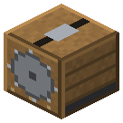

Пилорама


Бревно → 5 досок; 2 бревна → 1 древесная масса. Вал.
Брёвна пачкой из сундука сверху → 5 досок с бревна + древесная масса Forestry (1 на 2 бревна) в сундук снизу. Масса — единственный источник опилок (B1): бумага, картон, нитроцеллюлоза, биогаз, панели BiblioCraft. Крутит вал.
Параметры
| Эпоха | 2 — Пар и механика |
|---|---|
| Многоблок | нет |
| Привод | вал 3 л.с. |
| что делает | брёвна -> доски (5 с бревна) + древесная масса Forestry (единственный источник опилок); берёт сверху, сдаёт вниз |
| энергия на входе | вал 3 |
| из чего | бронзовые шестерни, железный вал IC2, доски, железные и стальные листы |
Числа
| пилорама | 3 л.с. |
|---|
Кто кормит
- вал ← Паровая машина, Паровая машина высокого давления (трансмиссия)
Кого кормит
- машины Zavod её продукт не едят
Как устроено (из кода)
Пилорама (циркульная пила на валу): пилит брёвна пачками, пока крутится вал. Брёвна сама берёт из сундука (или любого инвентаря) СВЕРХУ, доски и опилки сама сдаёт в сундук СНИЗУ. Можно и воронками/трубами, и руками. Пачка - до BATCH брёвен одного вида за TIME тиков при полных оборотах. Выход: PLANKS досок с бревна (руками 2, ножовкой 4; паровая циркулярка - толстый пропил - 5; ленточная пила TE - 6 и больше опилок) + опилки TE, 1 на 2 бревна. Какие доски - решает верстак: что даёт рецепт "1 бревно -> доски", то и пилим (Forestry, Extra Trees тоже). Слоты: 0 брёвна, 1-4 выход.